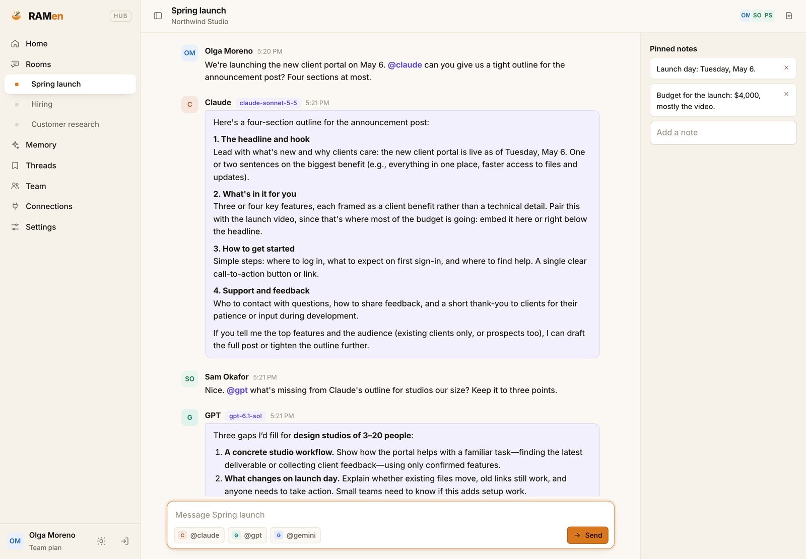

One hub for every AI you use.
Your team, your memory and your models in one place. Rooms where people and several AIs work in one conversation, one memory that Claude, ChatGPT and your own local AI all share, and a local engine that brings every chat back in seconds.
Free plan forever ✦ 14 days of everything, no card ✦ Mac, Windows and Linux, including ARM
New: RAMen Hub, your team and every AI in one room ✦ RAMen Sleep, a memory that learns while you sleep ✦ RAMen Cloud, Claude and GPT that never cut you off ✦ RAMen Online, your memory in Claude and ChatGPT ✦ RAMen Endless, long chats at the cost of a fresh one
Your team and every AI, in one room.
Rooms are live chats where your team and several AIs work in one conversation. Mention a model to bring it in: @claude drafts, @gpt checks, @gemini adds a view, and everyone sees each answer as it is written. The room's notes and your team's memory go along, and from inside Claude or ChatGPT you can read a room or post to it.

Claude and GPT answering one team in RAMen Hub, on the team's own API keys. How RAMen Hub works
Several AIs, one conversation
Claude, GPT and Gemini in the same chat as your team, each building on what the others said.
Join by link
No email needed: send a link. People with RAMen join free, and a team plan's seats cover everyone else.
Inside every app
From Claude, ChatGPT or Claude Code, read a room, post to it and use the team's shared memory.
Your keys, your data
Models run on your team's own API keys. Private memory stays private, and you can delete anything.
Included in RAMen Pro and Team ✦ Teammates without RAMen join on a team seat
Keep your apps and models. RAMen adds the memory.
Apps made for Ollama, OpenAI or Anthropic talk to RAMen without a change. Every model on your computer is one pick away, and each conversation keeps its memory wherever it goes.
Your apps
 Open WebUI
Open WebUI Continue
Continue Cline
Cline Aider
Aider OpenCode
OpenCode Claude Code
Claude Code Codex
Codex
and any app made for Ollama or OpenAI
Your models
 Ollama
Ollama LM Studio
LM Studio Hugging Face
Hugging Face
Already use Ollama?ramen start --ollama replace
Claude Coderamen claude
Codexramen connect codex

It learns while you sleep.
At the end of the day, RAMen has your own model study your conversations, on your computer, and keep what you told it: your people, your work, your rules, how you like things. From the next chat on, every app and every model knows it, with none of the old chats in the prompt.
- Monday, in one app
YouWhen I say "the usual", I mean 12 rye boules for the Thursday farmers market.
 Monday night
Monday night
ramen sleepYour model reads the day's conversations, writes careful notes of what you said, and keeps your own words.
- Tuesday, in another app
YouWhat do I mean when I say "the usual"?
Your modelWhen you say "the usual," you mean 12 rye boules for the Thursday farmers market.
A real answer from our test with a made-up person and Qwen3 4B, its first sentence. How Sleep works
One memory, every model
Every app gets it, through every API RAMen speaks. Switch models and what it learned stays.
What came from you
It keeps the facts you gave, in your own words, not its own suggestions. Each night it studies only the new conversations.
Yours to keep or delete
All of it stays on your computer. ramen sleep --off stops using it and ramen sleep --forget deletes it.
Bring your history
Months of chats in ChatGPT or Claude? ramen import reads their data export, so RAMen knows you from day one.
Part of Pro and the 14-day trial ✦ A preview: it can still get things wrong, and may guess about things you never told it
Claude and GPT, never cut off.
Add your own Claude or OpenAI key and your apps get their models through RAMen, with your memory. Your own model quietly reads along on your computer, so when the cloud hits a limit, goes down or the wifi drops, it carries on at once, knowing everything said so far.
- In your app, with Claude
YouMy sourdough starter is called Gus. I feed him at 1:5:5, starter to flour to water.
- Then Claude stops answering
A usage limit, an outage or no internet. Your own model has been reading along the whole time.
- A moment later, the same chat
YouWhat feeding ratio do I use for Gus, and how much flour for 30 g of him?
Your modelGus's feeding ratio is 1:5:5 (starter : flour : water).
A real answer from our test with Claude in the cloud and Qwen3 4B on an 8 GB Mac, its first sentence. How RAMen Cloud works
Your key, your choice
Nothing goes to a cloud unless you add a key with ramen cloud key claude or ramen cloud key openai. Every other model stays on your computer.
Your memory goes along
With ramen cloud memory on, the notes that match each question go with it, so Claude and GPT know what you told RAMen. Off unless you turn it on.
Sleep learns from it
Cloud chats are kept like any other, so the next ramen sleep learns from them too.
Any app, by name
Apps that use OpenAI's or Anthropic's API pick the model by name, like claude-sonnet-5-5, and the answer says when your own model took over.
Part of Pro and the 14-day trial ✦ A preview: after a takeover, the answers come from your own, smaller model
One memory for Claude and ChatGPT.
Connect RAMen Memory in Claude or ChatGPT, on the web, the desktop apps or your phone. They save what you tell them and look it up when it matters, so you stop explaining yourself again, in every app and every chat. No install needed, and it works with your computer off.
- One chat in Claude
YouMy daughter Tova turns 7 next week and I'm baking for her class. She's allergic to sesame, so give me three nut-free, sesame-free snack ideas kids like.
- Claude saves it to RAMen Memory
"My daughter Tova is allergic to sesame; she turns 7 next week and I'm baking nut-free, sesame-free snacks for her class."
- A new chat, days later
YouI'm packing a snack for my kid's lunch. Which ingredient do I have to avoid?
ClaudeAvoid sesame. Tova is allergic to it.
A real exchange from our test with Claude Sonnet 5.5 and RAMen Online, its first sentences. How RAMen Online works
Claude and ChatGPT
Add RAMen Memory once in each app's connectors and sign in with your RAMen Pro key. It works in the browser, the desktop apps and the phone apps.
One memory, every AI
Tell ChatGPT on Monday, and Claude knows on Tuesday. With RAMen on a computer, your local models and Sleep share the same memory.
The newest holds
When something changes, a new address or a new routine, the newer note wins. When it has nothing, your AI says so instead of guessing.
Yours to delete
Ask your AI to forget anything, or delete all of it with ramen online --forget. We never read it, sell it or train on it.
Set it up in a minute
- On claude.ai, open Settings › Customize › Connectors › Add › Add custom connector, name it RAMen Memory and paste this address:
https://ramen-online.matthewsleibel.workers.dev/mcp - Click Connect and sign in with your RAMen Pro license key.
- So Claude uses it by itself, add this line in Settings › Your Claude › Instructions:
I use the RAMen Memory connector as my memory across my AI apps. Before answering anything about me (my people, work, plans, preferences or earlier chats), check RAMen Memory. When I tell you a lasting fact about myself, save it to RAMen Memory as well.
Set up once, it is in Claude's desktop and phone apps too.
Coming to the plugin directory
RAMen Memory is on its way to ChatGPT's plugin directory. Once it is listed, add it in Settings › Plugins › Browse directory and sign in with your key, then add the same line in Settings › Personalization › Custom instructions.
Without the line, Claude and ChatGPT still use RAMen whenever you name it: "save this to RAMen", "check RAMen".
Part of RAMen Pro ✦ Your memory is kept on RAMen's servers so it works with your computer off; see the privacy policy
Long chats, at the cost of a fresh one.
Every reply in a long chat re-reads the whole conversation, and that is what burns through your Claude and ChatGPT limits. Say "Save this chat to RAMen", start a fresh chat in any AI app, say "Continue my RAMen thread", and it picks up exactly where you were: every name, number, decision and draft.
- A long planning chat in Claude
YouPlease save this whole chat to RAMen as a thread, with the email draft, so I can continue it in a fresh chat.
- RAMen keeps where it stands
The goal, what changed and what it was before, each decision and why, what is still open, and the drafts word for word.
- A fresh chat
YouContinue my RAMen thread team offsite. How many people are coming now, and what was it before?
Claude14 people now. It was 12 before.
A real exchange on claude.ai with RAMen Online, its first sentence. How RAMen Endless works
A fraction of the tokens
A fresh chat that starts from the thread reads a short page instead of the whole conversation, every time it answers.
Nothing important lost
Values keep what they were before, decisions keep their reasons, and every draft comes back word for word.
Any AI picks it up
Start in Claude, go on in another app when you hit a limit, come back. Each save adds to the same thread.
Details on request
The thread stays short. Any draft, any number, anything said along the way is one question away.
Part of RAMen Pro, in RAMen Online ✦ Works in any app with RAMen Memory connected
Long chats stop slowing down.
The longer a conversation gets, the slower a local model writes. RAMen reads only the parts of the conversation that matter at each step, so the speed holds.
Measured on an NVIDIA L4 with Qwen3-4B, November 2026: 42 versus 9.1 tokens per second at 128K tokens, same settings. The video: Qwen3 32B on an RTX A6000, 20.5 versus 8.4 tokens per second at 87K tokens, same answer. How it works and all results.
Four commands. No new tools.
RAMen picks a model that fits your computer, sizes the memory, and speaks the same APIs as Ollama, OpenAI and Anthropic, so your apps work unchanged.
 STEP 01
STEP 01Install
One line. Mac (Apple silicon) and Linux, in Terminal:
curl -fsSL https://getramenai.com/install.sh | bashWindows 10 and 11, in PowerShell:
irm https://getramenai.com/install.ps1 | iex STEP 02
STEP 02Start
It finds a model that fits, downloads it and starts in the background. Or start one you already downloaded with Ollama or LM Studio, or any GGUF file.
ramen start STEP 03
STEP 03Connect your apps
Apps made for Ollama find RAMen at Ollama's usual address (if you use Ollama,
ramen start --ollama replacetakes its place). Cline, Continue, Aider, OpenCode, Open WebUI and Codex in one command; Claude Code withramen claude.ramen connect cline- STEP 04
Let it learn
When you are done for the day, run Sleep: RAMen pauses, your model studies the day's conversations and remembers what you told it, and RAMen starts again, for every app and model. Part of Pro and the trial.
ramen sleep
Memory that keeps up with your agents.
Sessions that survive restarts
Every conversation is saved to disk on its own and comes back in seconds, even after a reboot.
Many agents, one GPU
Switch between agents and chats without re-reading their history. Each one resumes where it stopped.
Fast on long chats
Selective reading switches on by itself where it is faster on your machine, so RAMen is never slower.
Models bigger than your memory
Run a mixture-of-experts model larger than your computer's memory, like gpt-oss 120B on a 16 GB Mac. RAMen reads its experts straight from the file into its own cache. On Pro.
Works with your apps and models
One command connects Cline, Continue, Aider, OpenCode, Open WebUI, Claude Code and Codex, and apps made for Ollama work too. Every model already on your computer shows up in them, and picking one switches RAMen to it. Claude Code, Codex, Ollama apps and the models you already have are part of Pro and the trial.
Stays on your computer
Your local chats, files and sessions never leave your machine, and it works offline. Cloud models are used only with your own key. Built on llama.cpp, the engine local AI already runs on.
Learns while you sleep
Run ramen sleep when you are done for the day: your own model studies your conversations on your computer and keeps what you told it. New chats in every app and with every model know it, with none of the old chats in the prompt. It can still get things wrong. On Pro.
Your local memory in Claude
ramen mcp lets Claude Desktop, Claude Code, Codex and other apps that use MCP ask your local model what it learned about you. ramen connect claude-desktop sets it up in Claude Desktop in one step. They get a short answer, and only that answer leaves your computer. On Pro.
Thinking models finish their answers
Models that think before they answer get room left for the answer, so a token limit or a full chat no longer cuts them off mid-thought. Two of them are in the catalog: ramen start qwen3-4b-thinking.
Measured on a Mac mini M2 Pro with 16 GB and gpt-oss 120B (63 GB), November 2026, same settings: a 1,233-token prompt read at 62 versus 14 tokens per second by plain llama.cpp, and the model started in 5 seconds versus 41. Writing runs at 2.8 tokens per second, up from 1.9 with RAMen 1.0. Big models are part of Pro and the trial. How it works.
Free forever. Everything for $3.99.
Start free. Every plan begins with 14 days of everything, no card needed.
Free
- Remembers your last 3 chats, back in seconds
- One chat at a time
- Works with your apps through the OpenAI API, one command to start
Pro Popular
- RAMen Hub: rooms with your team and several AIs, shared memory
- Your memory in Claude, ChatGPT and every AI app
- Remembers every chat and agent session
- Many agents at once on one GPU
- Long chats stay fast, plus the draft helper on supported models
- Models bigger than your computer's memory
- Claude Code, Codex and apps made for Ollama
- The models you already downloaded, one pick away
- Learns from your chats while you sleep (RAMen Sleep)
- Your local memory in Claude and other MCP apps
- Up to 3 of your computers
Team
1 seat: $5.99 a month
- Pro for everyone on the team, plus RAMen Hub's rooms, shared memory and admin
- Teammates join by link, no email
- The more seats, the less each costs: half off at 50
More than 100 people? Talk to us
Server
- One GPU machine serving your whole team
- A key per person, conversations kept apart
- Usage per person and Prometheus metrics
Enterprise
Offline licenses for machines without internet, invoices and purchase orders, a support agreement.
Secure checkout by Polar ✦ Sales tax handled at checkout ✦ Cancel any time in your customer portal
Good to know.
What do I need to run it?
A Mac with Apple silicon, or a Windows or Linux PC, with or without an NVIDIA card; Linux on ARM works too (for example NVIDIA DGX Spark or AWS Graviton). RAMen picks a model that fits, or use any GGUF model, including the ones you already downloaded with Ollama or LM Studio. Selective reading on long chats needs an NVIDIA RTX 20-series card or newer, or an Apple Silicon Mac. Session memory works everywhere.
Can it run a model bigger than my computer's memory?
Yes, on Pro and during the trial, for mixture-of-experts models such as gpt-oss 120B or Qwen3 30B-A3B. RAMen keeps the rest of the model in memory and reads the experts from the SSD as they are needed, into its own cache. It writes more slowly than a model that fits, and the answers are the same. ramen models shows what runs on your computer.
Does it work with Ollama or LM Studio?
Yes, on Pro and during the trial. The models you downloaded with Ollama or LM Studio show up in your apps and in ramen models, and start without a new download. Apps made for Ollama can talk to RAMen, and ramen start --ollama replace puts RAMen in Ollama's place, so they use it without a change. ramen stop starts Ollama again.
Can I build RAMen into my own app?
Yes. On a computer or a server, point your app at RAMen's OpenAI API (or, on Pro, its Anthropic or Ollama API) and every conversation gets its memory. For Android and iPhone apps, the RAMen kit (preview) goes inside your app: a Maven library on Android, a Swift package on iPhone. Details on the developers page.
Does it send my data anywhere?
Not unless you choose to. Everything runs on your computer, including what RAMen Sleep learns. If you add your own Claude or OpenAI key (RAMen Cloud), the chats you have with their models go to them, as they would from any app, and RAMen's notes go along only if you turn that on. With RAMen Online, your memory is kept on RAMen's servers so Claude and ChatGPT can use it; it is never sold, shared or used for training, and one command deletes it. Paid plans check the license key at start-up, and RAMen keeps working offline between checks. If you connect RAMen Memory to an app such as Claude, the short answers that app asks for go to it. Details in the privacy policy.
Which apps work with it?
On every plan, anything that talks to the OpenAI API: ramen connect sets up Cline, Continue, Aider, OpenCode and Open WebUI for you. On Pro and during the trial, also Anthropic's API and Ollama's API: ramen connect codex sets up Codex, and ramen claude starts Claude Code with RAMen's model.
Can it make Claude or ChatGPT faster?
No. Those models run on Anthropic's and OpenAI's own servers. RAMen speeds up the models on your own computer, and it can run Claude Code and Codex, the coding tools, on those models with their sessions saved.
Can I use my RAMen memory in claude.ai or ChatGPT?
Yes, on Pro, with RAMen Online. In Claude (web, desktop and phone apps), add RAMen Memory as a custom connector, sign in with your RAMen Pro license key and add one line to Claude's instructions (the steps). Claude then saves what you tell it and looks it up when it matters, in every chat, also with your computer off. ChatGPT gets it once it is in ChatGPT's plugin directory. If you run RAMen on a computer, ramen online links it, so what Sleep learns goes up and what you told Claude or ChatGPT comes down to your local models.
Can I use Claude or GPT through RAMen?
Yes, with your own API key, on Pro and during the trial: ramen cloud key claude or ramen cloud key openai. Your apps then ask RAMen for those models by name, like claude-sonnet-5-5. Your own model reads along on your computer, so if the cloud hits a limit, goes down or your internet drops, it answers at once with everything said so far, and the answer says so. With ramen cloud memory on, the notes that match each question go along, so the cloud model knows what you told RAMen. Without a key, nothing goes to a cloud.
What is RAMen Hub?
One place for you, your team and every AI you use. Rooms are live chats where people and several AIs (Claude, GPT, Gemini) work in one conversation; teams share a memory that every member's AI app can read and add to; and your own memory and saved chats live there too. It works in the browser, and from inside Claude, ChatGPT and other AI apps through RAMen's connector.
Do my teammates need RAMen?
No. You send an invite link, no email needed. People who already have RAMen join with their own plan, free. Everyone else joins on one of your team plan's seats and gets a member code to sign in with, also from their own AI apps.
Who pays for the AI models in rooms?
Your team does, directly: models run on the team's own Anthropic, OpenAI or Google API keys, added once by the team's owner. RAMen never pays for, marks up or sees your model use, which is why RAMen stays this affordable. Each model reads the room's notes and the latest messages, not the whole history, so long rooms stay cheap.
Can my team see my private memory?
No. Your own memory and your saved chats are yours only. Teams share only what is put in the team's memory or said in its rooms, and an owner or admin can remove people at any time.
What happens after the trial?
RAMen keeps working on the free plan: it remembers your last 3 chats, one at a time, for apps that use the OpenAI API. Everything else is part of Pro. Add a Pro key with ramen activate YOUR-KEY to remember everything, run many agents at once, keep long chats fast, and use Claude Code, Codex, apps made for Ollama, the models you already have, RAMen Sleep, RAMen Memory, RAMen Cloud and RAMen Online.
Can my model learn from my chats?
Yes, with RAMen Sleep, on Pro and during the trial, on Mac, Windows and Linux and with any chat model RAMen runs. When you are done for the day, run ramen sleep: RAMen pauses (every session is saved), your own model studies what is new in your conversations, on your computer, and keeps what you told it and your own words, then RAMen starts again. It takes a while, so let it run when you are not using the computer; if it stops early, it keeps what it learned and goes on next time. New chats in every app and with every model then know what you told it. It can still get things wrong, and may guess about things you never told it. ramen sleep --status shows what it learned, ramen sleep --off stops using it and ramen sleep --forget deletes it.
Can Claude use what RAMen learned about me?
Yes, on Pro and during the trial. ramen mcp is a connector for Claude Desktop, Claude Code, Codex and other apps that use MCP: they can ask your local model what it knows about you, save something for the next sleep, and see what Sleep has learned. Your local model answers on your computer and only that short answer goes to the app. For Claude Code: claude mcp add ramen-memory -- ramen mcp. For Codex: codex mcp add ramen-memory -- ramen mcp.
Do thinking models work?
Yes. Models that think before they answer, such as Qwen3 Thinking, the hybrid Qwen3 models and gpt-oss, always finish with an answer in RAMen: it leaves them room for it, so an app's token limit or a full chat no longer cuts them off mid-thought. ramen start qwen3-4b-thinking and ramen start qwen3-30b-thinking are in the catalog; they are slower and meant for math, code and other hard questions.
Is there a one-time price?
Yes, at launch: Pro for life for $19.99, for the first 1,000 buyers. After that Pro is $3.99 a month or $29 a year.
Who is the Server plan for?
Teams that share one GPU machine. RAMen serves everyone from it, gives each person a key, keeps each person's conversations apart and counts usage per person.
How do I switch on my plan after buying?
Your license key is in the email from Polar and in your customer portal. Run ramen activate YOUR-KEY and you are done.
How do I cancel or change my plan?
Any time, in your customer portal. You keep your plan until the end of the period you paid for, then RAMen goes back to the free plan. See the refund policy.
Can I move my license to a new computer?
Yes. A Pro key works on three computers at a time, and you can free a slot yourself with ramen deactivate or from the customer portal.